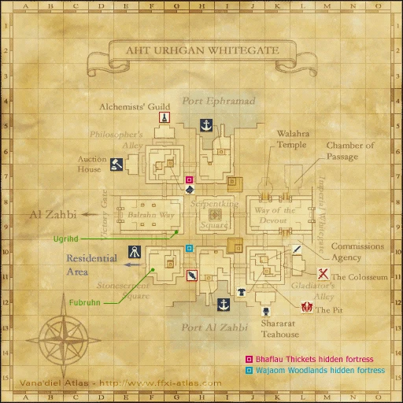
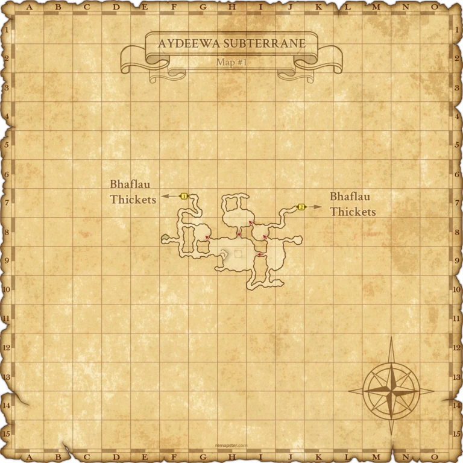
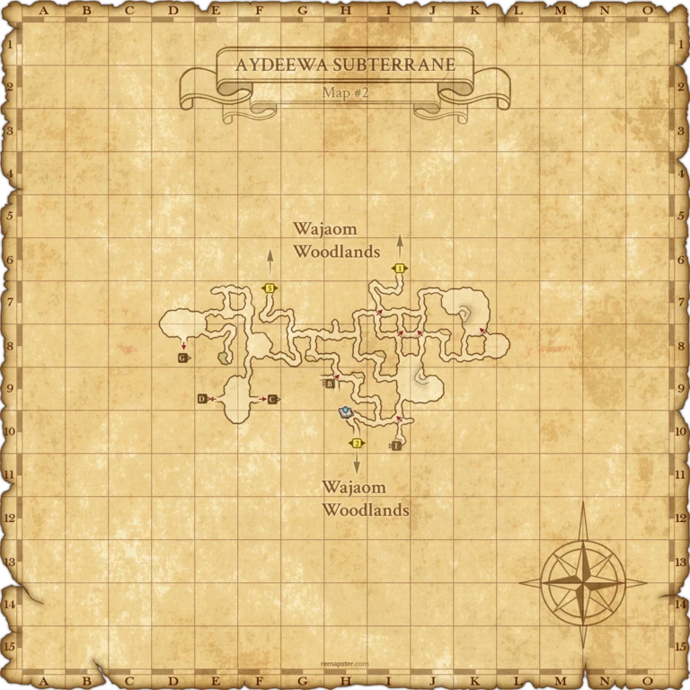
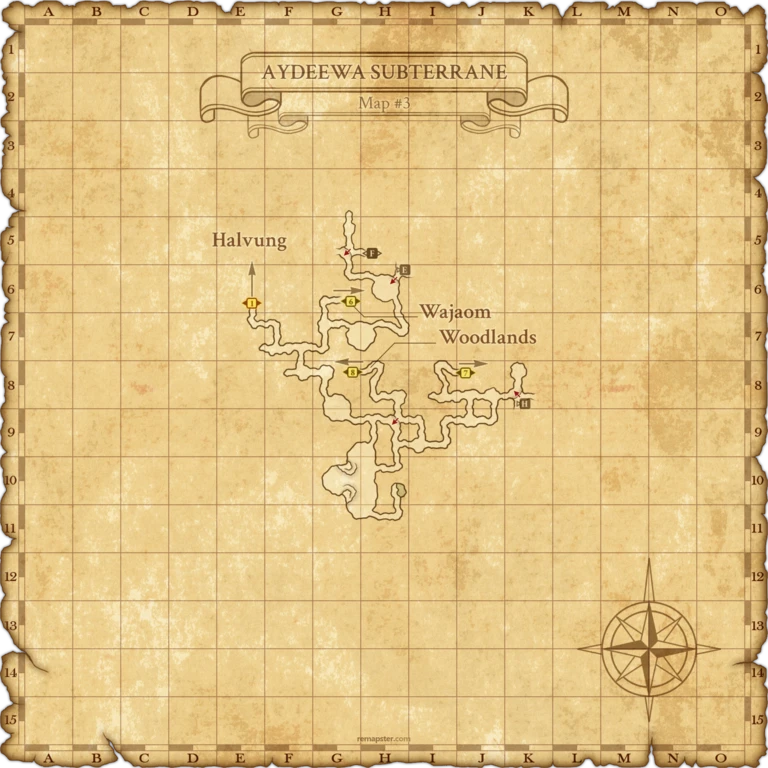
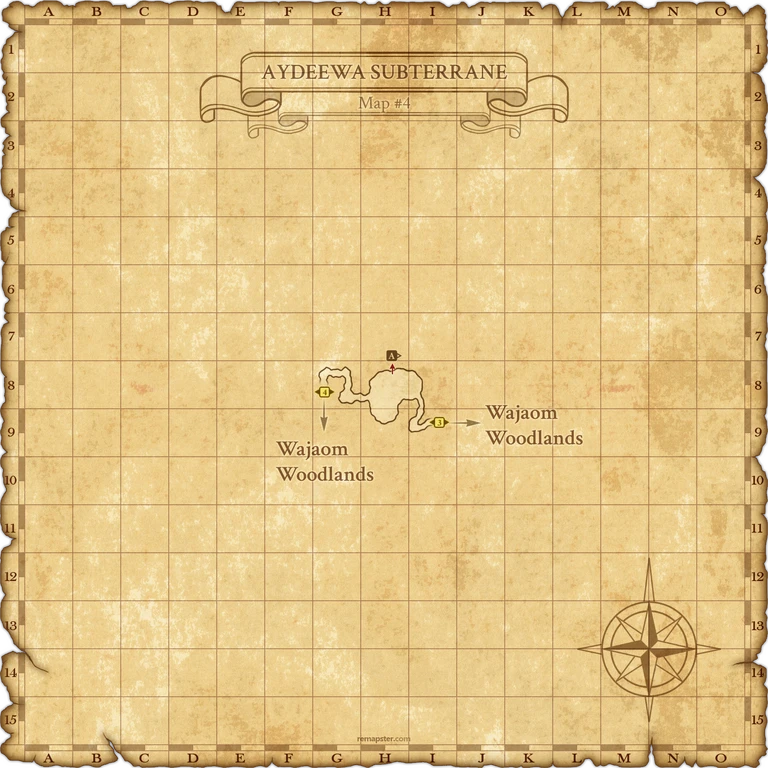
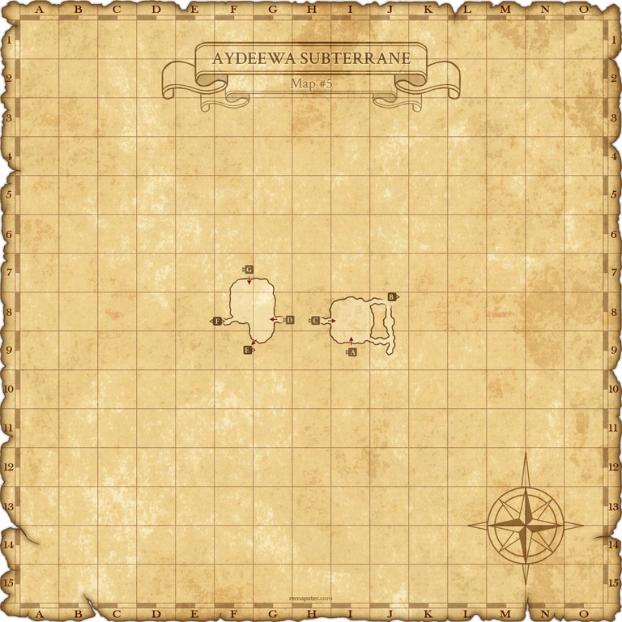
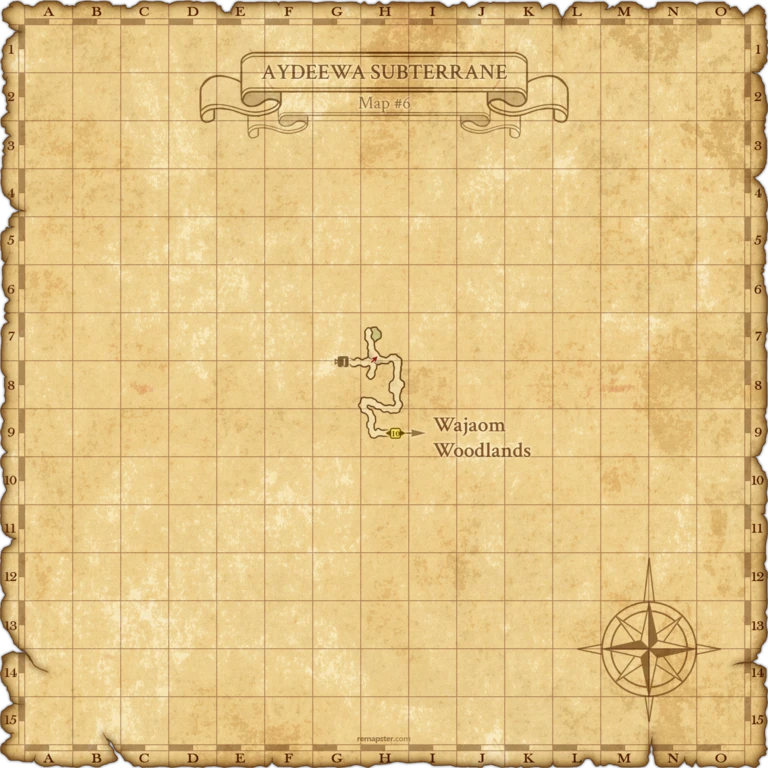
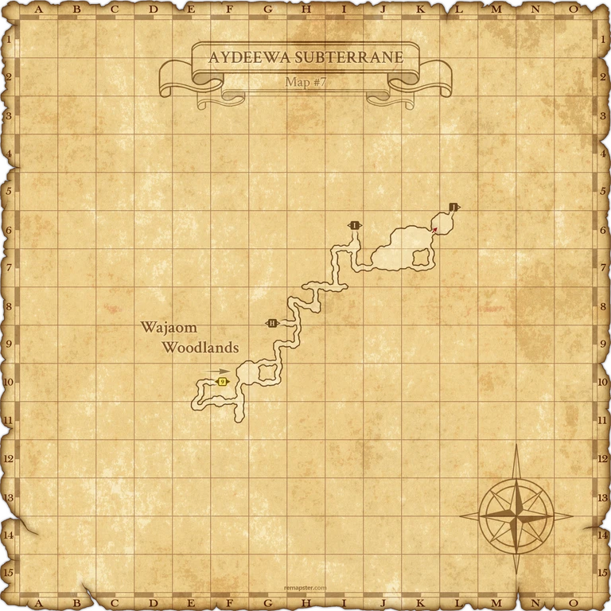

Before you begin
- Complete ToAU 20: Teahouse Tumult.
Starting point
Salaheem's Sentinels · Aht Urhgan Whitegate · I-10
Walkthrough
- Return to Whitegate and enter the second platform of Salaheem's Sentinels.
- Finish the automatic scene; speaking to Naja is not the trigger.
Completion and reward
No item reward.
What this opens
- ToAU 22: Shield of Diplomacy
Area maps
Open a zone below, then select a map to enlarge it. Match the named floors and grid coordinates in the steps; these are reference area maps, not a live position tracker.
Aht Urhgan Whitegate



Aydeewa Subterrane





















Zone guides
References
Steps are an original summary of the linked walkthrough and reviewed source. Other servers’ bonus rewards are not included. How to read requirements, waits and battlefield notes.